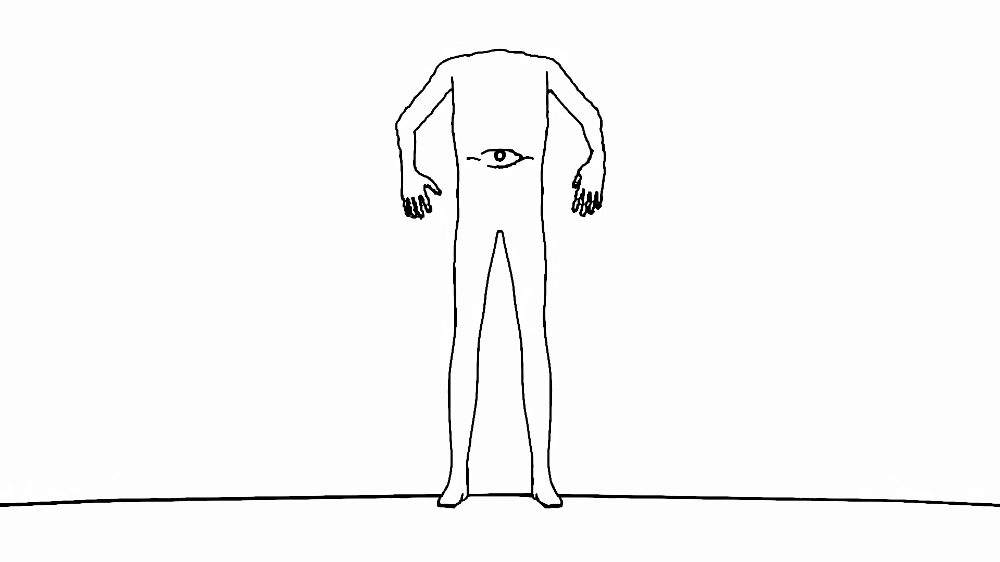
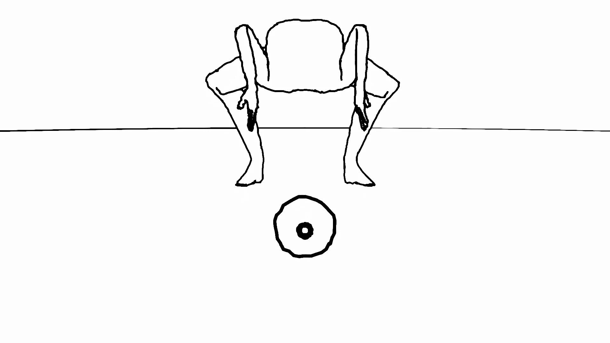
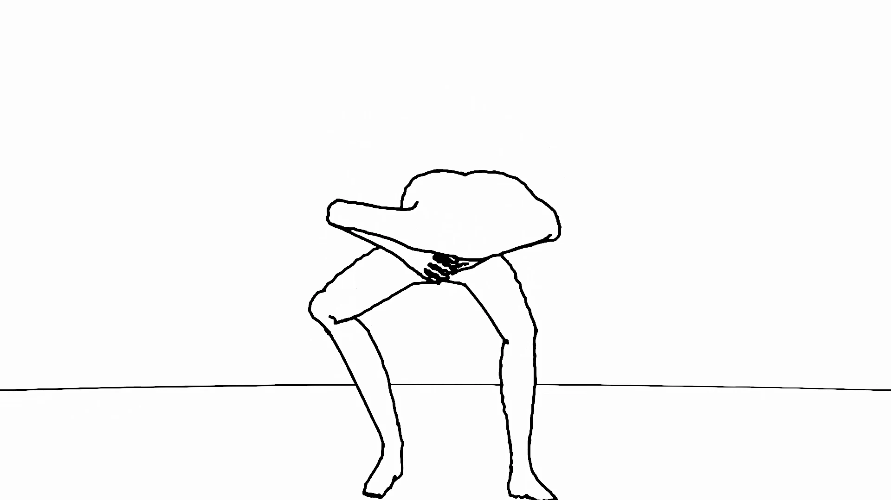
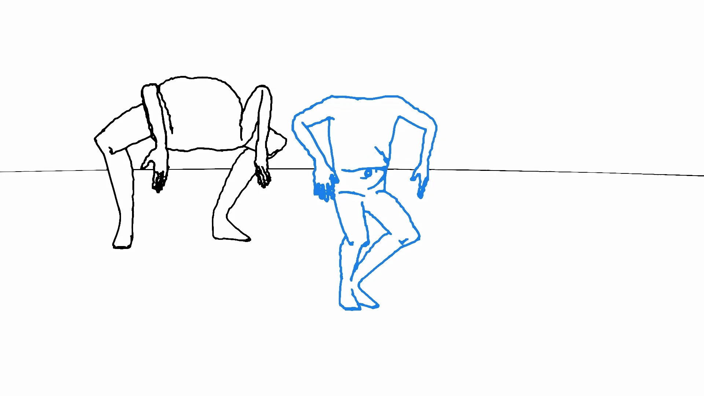
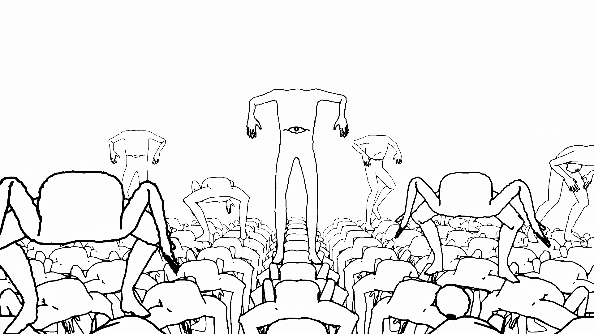
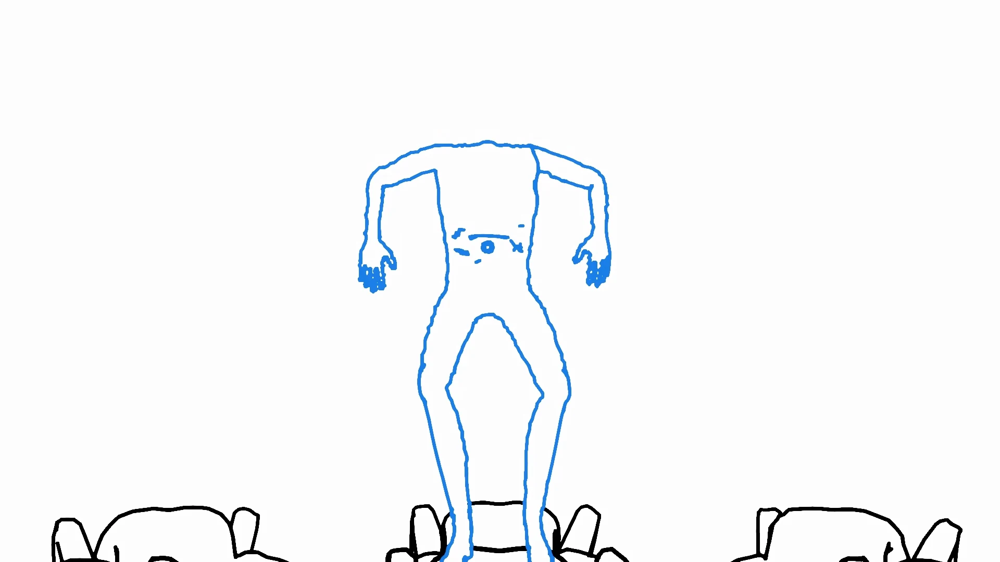
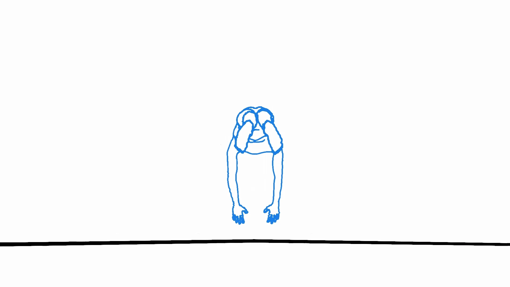
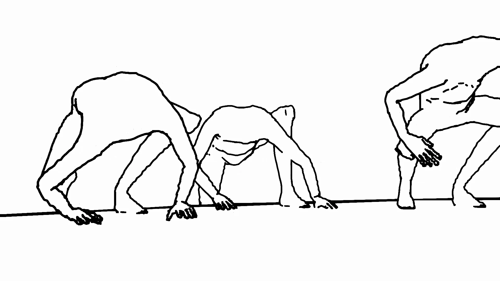
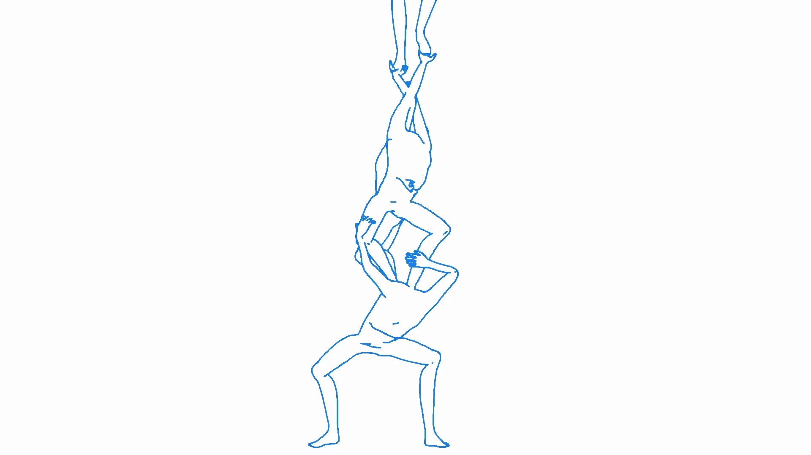
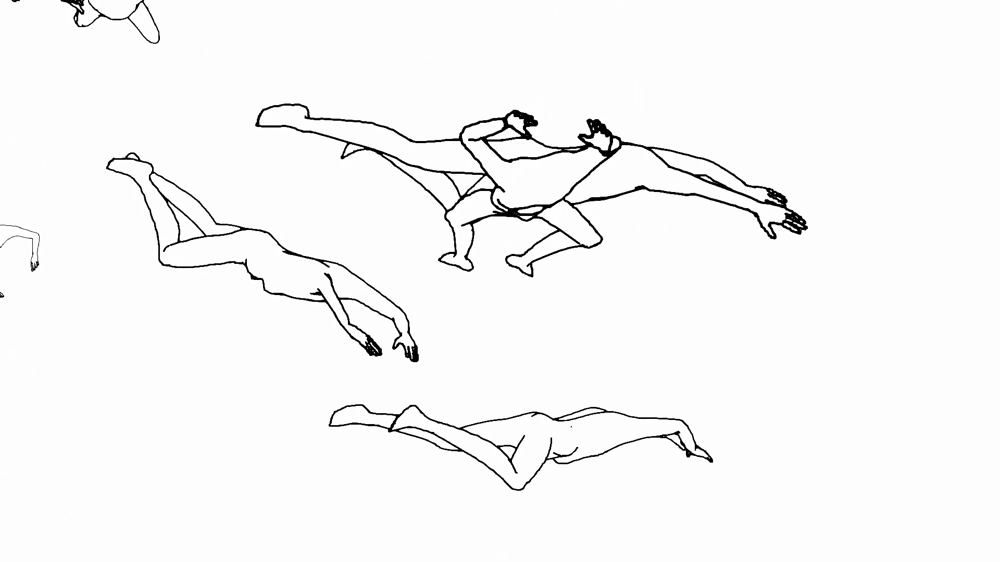

-tower-
문제 발생
/
We’ve had a problem
2025 /
Single-channel video, color, sound /
1920 x 1080 (px),
01’ 36”
문제발생(2025)은 한국의 인구 위기와
그에 대한 무감각을 다룬 애니메이션이다.
뉴스 속 반복되는 경고와 통계는 이미 익숙해져, 더 이상 감정을 일으키지 못한다.
나에게는 바로 이 무감각 자체가 가장 큰 공포로 다가왔고, 이는 스스로의 붕괴에 반응하지 못하는 사회의 모습을 드러낸다.
작품은 출산, 노동, 노화, 쇠퇴와 같은 인간의 반복적 행위를 기계적인 루틴으로 묘사한다.
존재가 숫자와 주기, 무의식적 반복으로 환원될 때, 과연 무엇이 남는가?
복잡한 서사 대신, 무표정한 반복을 통해 사회를 압축적으로 드러내는 작품이다.
그에 대한 무감각을 다룬 애니메이션이다.
뉴스 속 반복되는 경고와 통계는 이미 익숙해져, 더 이상 감정을 일으키지 못한다.
나에게는 바로 이 무감각 자체가 가장 큰 공포로 다가왔고, 이는 스스로의 붕괴에 반응하지 못하는 사회의 모습을 드러낸다.
작품은 출산, 노동, 노화, 쇠퇴와 같은 인간의 반복적 행위를 기계적인 루틴으로 묘사한다.
존재가 숫자와 주기, 무의식적 반복으로 환원될 때, 과연 무엇이 남는가?
복잡한 서사 대신, 무표정한 반복을 통해 사회를 압축적으로 드러내는 작품이다.
We’ve Had a Problem(2025) is an animation addressing Korea’s demographic crisis and the numbness surrounding it.
Repeated warnings and statistics in the news have become so familiar that they no longer evoke emotion.
This indifference itself became the most frightening reality to me, as it revealed a society unable to respond to its own collapse.
Through this lens, the work reflects on how routine actions, birth, labor, aging, and decline, are carried out almost unconsciously,
without questioning their meaning.
It asks what happens when human existence is reduced to numbers, cycles, and silent repetition.
The work depicts society through mechanical, repetitive actions rather than a complex narrative.
Repeated warnings and statistics in the news have become so familiar that they no longer evoke emotion.
This indifference itself became the most frightening reality to me, as it revealed a society unable to respond to its own collapse.
Through this lens, the work reflects on how routine actions, birth, labor, aging, and decline, are carried out almost unconsciously,
without questioning their meaning.
It asks what happens when human existence is reduced to numbers, cycles, and silent repetition.
The work depicts society through mechanical, repetitive actions rather than a complex narrative.










We’ve had a problem
←